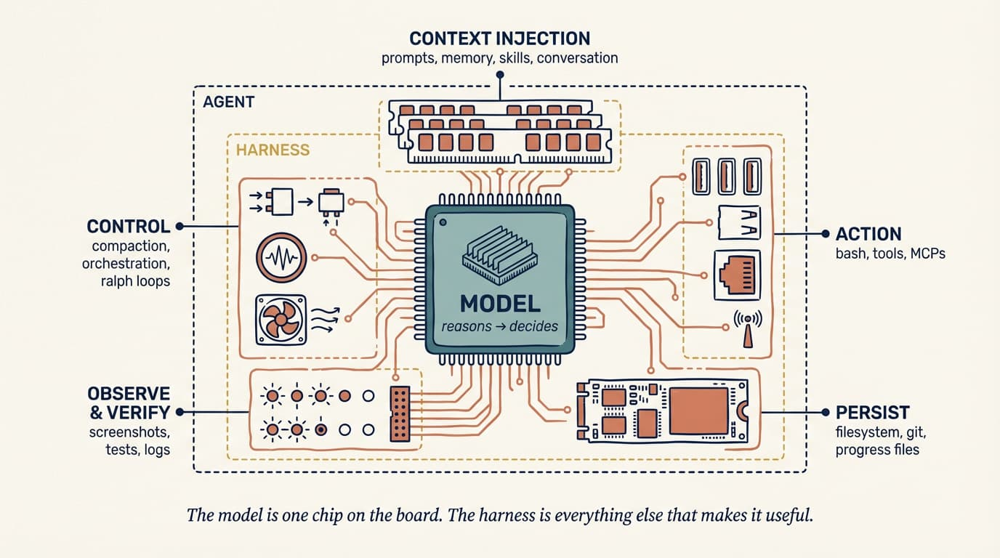
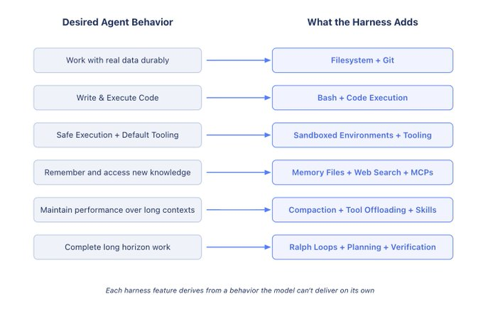
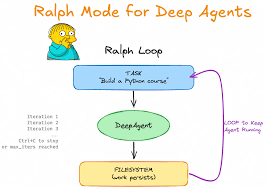
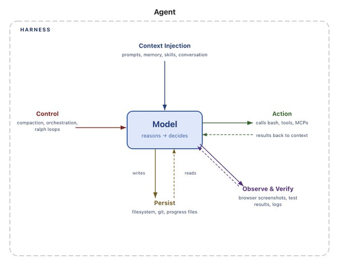

Transformo conhecimento organizacional e desafios operacionais em
produtos de IA aplicáveis ao mundo real — busca documental, análise assistida, automação inteligente e
apoio à decisão.
50+
horas de conteúdo autoral sobre IA aplicada a software
500k+
documentos institucionais no assistente do TCEMG
'25
Product Owner & AI Engineer · TCEMG
sistema agêntico sobre 500k+ documentos · workflows de análise de auditoria · capacitação
de servidores
'25
Professor de Engenharia de IA · Jornada de Dados
LLMs · RAG · engenharia de prompt e contexto · bancos vetoriais · agentes
Abertura · quem fala. Product Owner e Engenheiro de IA: visão de produto + arquitetura de soluções +
desenvolvimento prático. No TCEMG, assistente conversacional com recuperação sobre 500k+ documentos
institucionais e workflows de IA para análise preliminar de auditoria; também ministra capacitações para
servidores e treinamentos técnicos. Na Jornada de Dados, professor de Engenharia de IA com 50+ horas de conteúdo
autoral (LLMs, RAG, prompt/context engineering, bancos vetoriais, agentes). Experiência em setor público:
produtos de IA, auditoria, governança e capacitação.
Engenharia de IA · 2026Caio
Oliveira
Agent Harness
O sistema ao redor do modelo (contexto, memória, ferramentas, execução e validação)
que transforma um modelo num agente que entrega.
O modelo pensa. O harness faz o trabalho continuar.
cada peça do harness é uma ponte sobre algo que o modelo não faz sozinho
Abertura. A revolução atual em agentes não está só em modelos mais inteligentes, mas na engenharia do
sistema ao redor do modelo. Leia a frase-guia: "o modelo pensa; o harness faz o trabalho continuar".
→ / Espaço ou rolar/arrastar avança · ← volta · S notas · O grade · F tela cheia
Estudo DORA · DevOps Research & Assessment
A IA é um amplificador.
Ela amplifia as forças de organizações de
alta performance, e as disfunções das que sofrem. A ferramenta não conserta o processo;
ela acelera o que já existe.
Base sólida
Plataforma interna de qualidade, APIs fortes, workflows claros e testes robustos → a IA
vira uma colaboradora poderosa.
Base frágil
Tooling fragmentado, dados em silos e infra frágil → a IA só ajuda a gerar dívida
técnica mais rápido.
Estruture os processos
antes de adotar a ferramenta. O harness é exatamente essa estrutura.
"AI's primary role in software development is that of an amplifier.
It magnifies the strengths of high-performing organizations and the dysfunctions of struggling ones. […] if a
team suffers from fragmented tooling, siloed data, or fragile infrastructure, AI will simply help them
generate technical debt faster."DORA · Balancing the Tensions of
AI
fonte: dora.dev/insights/balancing-ai-tensions
Por que estruturar antes de adotar. O estudo da DORA (DevOps Research & Assessment, Google Cloud)
sobre o impacto da IA nos times de desenvolvimento: a IA é, antes de tudo, um amplificador. Ela magnifica
as forças de organizações de alta performance e as disfunções das que sofrem. Com plataforma interna de
qualidade, APIs fortes, workflows claros e boas práticas de teste, a IA atua como colaboradora poderosa. Mas com
tooling fragmentado, dados em silos ou infraestrutura frágil, ela "simply help them generate technical debt
faster". Gancho para a palestra: o harness é justamente essa estrutura que precede a ferramenta — sem ela,
adotar IA só acelera o caos. Fonte: dora.dev/insights/balancing-ai-tensions.
A evolução · 2022 → 2027
De instruir → informar → orquestrar
Três disciplinas em cinco anos. Cada uma contém
a anterior. Clique nos pontos da linha do tempo.
2022
2023
2024
2025
2026
2027
Linha do tempo interativa. Prompt (2022, como pedir) → Context (2025, o que entra na janela) → Harness (2026,
como o agente trabalha). Clique em cada era para detalhar. Cada etapa contém a anterior; janelas maiores
ajudaram, mas o contexto continua finito e degradável ("context rot").
Prompt × Context × Harness
Dimensão
Prompt Engineering
Context Engineering
Harness Engineering
Escopo
Interação única
Janela de contexto, ao longo de turnos
Sistema inteiro do agente
O que controla
Redação da instrução
Seleção, ordenação e compactação de tokens
Orquestração de ferramentas, persistência de estado, loops de verificação, recuperação de erros
Modos de falhas
Instruções pouco claras
Informação errada ou ausente no contexto
Erros do agente, doom loops, drift entre sessões, ações inseguras
Fronteira temporal
um turno
uma janela de contexto
múltiplas janelas · toda a tarefa
fonte: Augment Code · Harness Engineering for AI Coding
Agents
Tabela do Augment Code (traduzida). O eixo que mais distingue o harness é a fronteira temporal: ele
governa trabalho coerente ao longo de múltiplas janelas e de toda a vida da tarefa, não de um turno nem de uma
janela.
A tese
Agent=Model+Harness
Um modelo cru só transforma texto em texto. Vira agente quando
o harness lhe dá estado, ferramentas, execução e validação.
"If you're not the model, you're the harness."Vivek Trivedy · LangChain

o modelo é um chip na placa, e o harness é todo o resto que o torna útil
A equação da LangChain. Modelos, fora da caixa, só transformam texto em texto. Não mantêm estado durável,
não executam código, não acessam conhecimento em tempo real. Tudo isso é nível-harness.
O que o harness faz
Cada recurso deriva de um comportamento que o modelo não entrega sozinho.

Leia a tabela da esquerda para a direita. Cada linha é um comportamento desejado e a peça de harness que
o destrava: dados duráveis → filesystem+git; executar código → bash; conhecimento novo → memory files+web+MCPs;
horizonte longo → ralph loops+planning+verification.
O que o harness faz · peça por peça
Comportamento desejado → o que o harness adiciona.
Cada linha da
imagem é uma ponte sobre algo que o modelo não faz sozinho. Clique para abrir cada caixa.
Versão interativa da imagem anterior. Abra uma caixa por vez e conecte cada comportamento à peça de
harness que o destrava. (1) Dados duráveis → filesystem + git, a primitiva mais fundamental; a memória
real é o estado nos arquivos, não a conversa. (2) Executar código → bash, a ferramenta de propósito
geral: dê um computador, não uma tool por ação. (3) Execução segura → sandbox + default tooling:
perímetro descartável, allow-list, isolamento de rede, teardown; com runtimes/git/browser/tests prontos, o
agente se autovalida. (4) Conhecimento novo → memory files + web + MCPs: memory recarregado ao editar
(aprendizado contínuo); todo MCP é texto confiável (superfície de ataque). (5) Contextos longos → compaction
+ offloading + skills: a janela é finita e degrada; o contexto é curado, não despejado. (6) Horizonte
longo → ralph loops + planning + verification: o loop roda sozinho e a validação prova, não promete
(constraint · feedback · quality gates).
O loop · Ralph
O Ralph loop amarra
tudo.
O loop mais simples que funciona (Geoffrey
Huntley). Ele transforma os componentes da anatomia num motor que roda sozinho.
while true; do cat PROMPT.md | agente; done
1
Lê o objetivo + o estado dos arquivos · instrução +
memória
2
Faz uma tarefa e age no ambiente · execução
3
Valida; a falha vira prompt de correção · validação
4
Grava o resultado no filesystem · estado
5
Um hook reinjeta o prompt em contexto limpo ↻ recomeça

O estado mora nos arquivos, não na janela. O progresso sobrevive a qualquer reset.
Alternativa: multi-agente
Planner · Generator · Evaluator, papéis separados, para quando a tarefa for grande demais para um
loop
só. Ralph adverte: não complique cedo demais.
Slide dedicado ao Ralph loop (Geoffrey Huntley): o loop agêntico mais simples possível: while true; do cat PROMPT.md | agente; done. Mostre como ele usa o harness: a cada
volta o agente lê o objetivo e o estado dos arquivos (instrução+memória), executa uma tarefa
(execução), valida (a falha vira prompt de correção), grava no filesystem (estado), e um hook reinjeta o prompt
em contexto limpo. Como a memória vive nos arquivos e não na janela, o progresso não se perde quando o contexto
enche ou reinicia. Monolítico de propósito. Huntley adverte contra multi-agente cedo demais ("agentes
não-determinísticos viram um red hot mess"). O engenheiro projeta o loop; o loop faz o trabalho.
O erro vira memória · o harness não encolhe
01 · a importância do erro
Todo erro vira um sinal
permanente.
Quando o agente
erra,
a falha não é um "run ruim" para repetir. Ela é escrita na memória, vira regra, hook, teste ou skill, para
que numa tarefa parecida o agente não repita o erro.
Um teste
comentado é mergeado sem querer. Vira três defesas permanentes:
regra no CLAUDE.mdpre-commit grepreviewer subagent
02 · o harness não encolhe
O harness não encolhe. Ele se move.
O harness que você
constrói não diminui quando chega um modelo melhor. O espaço de combinações não encolhe: ele
se move junto com o modelo, para problemas mais difíceis.
O Opus 4.6
resolveu a "ansiedade de contexto" e aquele scaffolding virou dead code. No lugar, o trabalho subiu de
nível:
memória de vários dias3 agentes coordenadosevaluators de UI
Só
adicione
uma constraint quando vir uma falha real. Só remova quando um modelo capaz a tornar redundante.
Dois movimentos do mesmo princípio: o harness é moldado ao longo do tempo e nunca é desperdiçado. Fonte:
Addy Osmani.
01 · A importância do erro: cada falha real é um sinal permanente, não um "run ruim" para repetir.
O agente aprende o erro e ele é persistido na memória (regra, hook, teste, skill) para não se repetir numa
tarefa
parecida. Exemplo de Osmani: um PR com teste comentado é mergeado sem querer; daí (1) o CLAUDE.md passa a dizer
"nunca comente testes; apague ou conserte"; (2) o pre-commit hook passa a fazer grep de .skip( e xit( no diff; (3) o reviewer subagent passa a marcar
teste comentado como bloqueador. Uma falha, três defesas. Princípio dele: "você só adiciona constraints quando
viu uma falha real; só remove quando um modelo capaz as tornou redundantes".
02 · O harness não encolhe, ele se move: o harness não desaparece com modelos melhores. "The space of
interesting harness combinations doesn't shrink. It moves." Exemplo de Osmani: quando o Opus 4.6 resolveu a
"ansiedade de contexto", aquele scaffolding virou dead code; no lugar surgem uma política de memória de vários
dias, um harness coordenando 3 agentes especializados, ou evaluators de qualidade de design em UIs geradas.
Constraints codificam suposições sobre os limites do modelo; quando os limites sobem, novos problemas aparecem e
pedem novo scaffolding, não menos. Conclusão: o esforço se realoca para cima, ele não evapora.
Parte 2 · Na prática com Claude Code
Parte 2
Tudo isso vive num diretório .claude/
Os quatro pilares deixam de ser abstração quando
viram arquivos concretos no repositório. A pergunta prática é simples: quem lê o quê?
skillssubagentsmcphookspluginsrulesworktree

Transição para a parte concreta. Ferramentas como Claude Code e Codex convergem nos mesmos princípios; o que
muda é a sintaxe dos arquivos. A partir daqui, cada pilar da Parte 1 ganha um endereço no disco. Os exemplos são
genéricos e adaptáveis a qualquer projeto.
Parte 2 · O projeto
Do "o quê" ao "o que
fazer".
O gestor
comercial vê que um KPI caiu — o painel não diz por quê nem o que fazer. O agente
é um chat que cruza números e texto e devolve um relatório de melhoria fundamentado, a partir de uma
pergunta em linguagem natural.
Os números · o quê / quanto
text-to-SQL no Postgres (somente leitura): quais KPIs estão abaixo da meta e em qual dimensão —
região, produto, canal.
O texto · por quê / o que fazer
recuperação qualitativa no Qdrant: voz do cliente e o histórico de tentativas — o que já funcionou
e o que falhou.
Grounding · a regra de ouro
Recomendações priorizadas, cada uma amarrada a uma fonte rastreável. Prescrição sem fonte é falha,
não resposta.
features que importam
›
"Como melhorar minhas vendas no próximo mês?" — o agente resolve período-alvo e escopo e
declara as premissas no topo.
›
Separa queda real de variação sazonal — tendência recente × mesmo período de anos
anteriores.
›
Streaming + multi-turno ("e na região Sudeste?") sem repetir o contexto.
›
O analista inspeciona o SQL e as fontes. O agente recomenda, não age — somente
leitura, zero efeito colateral.
grafo LangGraph determinístico · stores pré-populados · nginx é
a única porta exposta
Mergulho no produto, a partir do PRD.md. Problema: o gestor vê QUE um KPI caiu
(faturamento, recompra abaixo da meta), mas o painel não diz POR QUÊ nem O QUE FAZER — a explicação mora em
texto
não estruturado (tickets, NPS aberto, atas, post-mortems) que ninguém cruza com os números. Solução: chat
agêntico que cruza duas naturezas de dado — números (text-to-SQL no Postgres, somente leitura) dizem o
quê/quanto (quais KPIs abaixo da meta, em qual dimensão); texto (recuperação no Qdrant) diz por quê/o que
fazer (voz do cliente, o que já se tentou). Regra de ouro: grounding — toda recomendação amarrada a uma
fonte, zero prescrição sem origem. Features: pergunta em linguagem natural; o agente resolve período-alvo (mês
atual +1, tratando virada de ano) e escopo e declara as premissas; separa queda real de sazonalidade
(tendência × anos anteriores); não repete recomendações de relatórios passados; streaming; multi-turno; o
analista inspeciona SQL e fontes; o agente recomenda, não age. Stack: FastAPI (Python 3.13/uv) +
LangGraph
(grafo determinístico) + React/Vite, sobre Postgres + Qdrant + MinIO, nginx como única porta, embeddings OpenAI.
Fora de escopo: ingestão, multi-tenant, efeitos colaterais, forecasting estatístico formal, BI
self-service genérico.
Parte 2 · Ponto de partida
O que já está posto antes da câmera
ligar.
Preparado
fora do palco para focarmos no harness e na execução — não em encanamento. github.com/caio-moliveira/workshop-agent-harness
infra · dados · spec
✓
Repo com uv (Python 3.13) — pyproject.toml + uv.lock
✓
Ingestão já feita (seed/) — ~5 anos de vendas no Postgres + corpus
no Qdrant/MinIO, com narrativas plantadas
✓
Stack local (docker-compose.yml) — postgres · qdrant · minio · api
· nginx
✓
PRD.md — construído com a skill /grill-me
(entrevista que afia a ideia) → consolidado
✓
Harness no .claude/ — rules, hooks, MCP, subagente, comandos ▸ detalhado no próximo slide
skills baixadas · skills-lock.json
↓
Matt Pocock · grill-me, to-prd, to-issues, tdd, handoff…
Próximos passos:
/to-issues (PRD → fatias ready-for-agent; tracker e labels já no
CLAUDE.md) → executar issue a issue.
O que foi preparado fora do palco, para focarmos no harness e na execução. Repo no GitHub
(caio-moliveira/workshop-agent-harness): uv + Python 3.13; ingestão já
feita
em seed/ (não se reproduz em runtime — o app é runtime puro); stack
docker-compose (postgres/qdrant/minio/api/nginx, nginx é a única porta exposta);
PRD.md construído com /grill-me (entrevista que afia a ideia sem dó). As skills
foram baixadas e travadas em skills-lock.json (fontes: Matt Pocock, LangChain,
FastAPI,
React, UI/UX). O harness já está montado — próximo slide detalha. Próximos passos:
/to-issues (fatiar o PRD em fatias verticais ready-for-agent; tracker no
GitHub e labels de triagem já documentados no CLAUDE.md) — e então executar
issue a issue.
Parte 2 · O harness que construímos
Cada peça do .claude/, e por que ela existe.
Não é
template genérico: cada arquivo amarra um padrão do nosso time a um comportamento que queremos
garantir. o que faz · por que usamos
rules/ path-scoped
O que faz: 5 padrões por área (estilo, backend, agente, frontend, testes) que carregam só ao
tocar a área, via paths:.
Por que: o agente segue a convenção certa sem inchar o contexto com regra que não
interessa agora.
hooks settings.json
O que faz:PostToolUse roda ruff a cada
edição; Stop roda ruff+mypy+pytest e bloqueia se vermelho.
Por que: estilo e qualidade não dependem de boa vontade — o agente não declara
"pronto" no vermelho.
.mcp.json
O que faz: Postgres somente-leitura (--access-mode=restricted) p/
o agente inspecionar o schema real.
Por que: grounding na infra antes de escrever SQL — e o invariante read-only virou
configuração.
agents/revisor-codigo
O que faz: subagente que revisa o diff contra as rules + invariantes, em janela fresca.
Por que: verificação soft (LLM revendo código) que complementa o gate
hard dos hooks.
skills/
O que faz: procedimentos reutilizáveis (Matt, LangChain…) carregados sob demanda.
Por que: capacidade na hora certa, sem despejar tudo no contexto — curar, não
despejar.
commands + métricas
O que faz:/validar (gate invocável) e /scorecard, medindo a execução contra a Definição de Pronto.
Por que: líderes enxergam se está sendo bem executado — número, não fé.
Todo erro vira regra,
hook ou teste — o harness aperta um dente a cada falha. O /scorecard é a
prova de que está apertando.
Detalhe do harness que construímos — cada peça com o que faz e por que existe. rules/
path-scoped: carregam só ao tocar a área (via paths: no frontmatter), o que mantém o
CLAUDE.md enxuto. hooks no settings.json: PostToolUse
aplica estilo (ruff) a cada edição; Stop é o gate (ruff+mypy+pytest) que bloqueia o
fim
do trabalho no vermelho. .mcp.json: Postgres somente-leitura (--access-mode=restricted)
para o agente inspecionar o schema antes de escrever SQL — o invariante read-only virou config.
revisor-codigo:
subagente de revisão em janela fresca (verificação soft, complementa o gate hard). skills/: procedimentos
sob demanda (curar o contexto, não despejar). commands + métricas: /validar e
/scorecard medem a execução contra a Definição de Pronto. Fecho: o harness não
encolhe, ele se move — cada erro vira regra/hook/teste, e o /scorecard prova.
Parte 2 · O mapa de arquivos
Quem lê o quê.
Cada peça do .claude/ responde uma pergunta
diferente.
clique em cada arquivo para ver o papel e um exemplo
Explorador interativo, o coração da parte prática, alinhado à documentação do Claude Code (estrutura do
diretório
.claude/). A frase-síntese: "CLAUDE.md diz o quê; rules escopam por arquivo;
settings.json diz como; hooks garantem; MCP conecta; skills, agents e plugins empacotam capacidade; o worktree
isola." Clique em cada caixinha; cada uma traz no rodapé o link da doc oficial daquele tópico. Pontos a
destacar: precedência de settings (managed → local → projeto → usuário); MCP não mora no settings.json
(vive em .mcp.json) e é superfície de ataque; subagents (.claude/agents/) rodam em janela própria e devolvem só o resumo; plugins empacotam e
compartilham via marketplace; o Claude cria worktrees via --worktree. Fontes:
code.claude.com/docs/en (claude-directory, sub-agents, plugins, worktrees).
Parte 2 · Skills
Skill não é um .md. É uma pasta que o
agente descobre.
Skill ≠ .md: pasta com SKILL.md + scripts + references + assets. Progressive disclosure: o agente indexa só
nome+descrição no startup; lê o SKILL.md sob demanda; executa scripts; persiste dados entre sessões. Boas
práticas: a description é o gatilho (não um resumo); Gotchas são ouro; scripts > boilerplate; comece simples
e
itere; verification skills dão o maior impacto medível. Subagents e plugins agora moram no slide anterior (Mapa
de Arquivos). Fonte: code.claude.com/docs/en/skills. Use as abas para abrir o que precisar.
Parte 2 · Memória entre sessões
A janela é transitória. Os arquivos lembram.
Quando o contexto enche ou reinicia, nada na
conversa sobrevive. O que sobrevive é o que foi escrito no repositório, em quatro formas:
Handoff
Um resumo compacto da sessão (objetivo, o que foi feito, próximos passos) para outro agente continuar
de
onde parou.
MEMORY.md
Um índice de 1 linha por fato ou decisão durável, carregado a cada sessão.
docs/adr/
Architecture Decision Records: registram o porquê de cada decisão, não só o resultado.
Auto-memory
O Claude escreve notas para si mesmo em ~/.claude/projects/.../MEMORY.md,
carregadas no início de cada sessão (ligue/desligue com /memory).
A janela de contexto é
finita (~200K tokens) e enche com system prompt, CLAUDE.md, tools e, sobretudo, leituras de arquivo.
Quando lota, o auto-compact resume a conversa (/compact; /clear zera). E subagents rodam em janela separada: leem muito e
devolvem só o resumo, preservando a principal.
Responde "como a memória de sessão é usada no repositório". A context window é descartável; persiste-se em
arquivos. Handoff = brief compacto para continuar. MEMORY.md = índice durável. ADRs = o porquê. Auto-memory =
recurso da ferramenta (o Claude escreve em ~/.claude/projects/.../MEMORY.md, carregado no início da sessão).
Janela de contexto (doc context-window): ~200K tokens; o que mais enche são as leituras de arquivo; o
auto-compact resume a conversa quando lota (/compact), /clear
zera. Subagents usam uma janela separada e devolvem só o resumo (ex.: leem ~6.100 tokens e retornam ~420), o que
preserva a janela principal. Para horizontes longos, o reset com handoff reconstrói o essencial. Fonte:
code.claude.com/docs/en/context-window.
Parte 2 · Sua memória é seu harness
Quem controla o harness, controla a memória.
Memória não é
um
plugin: é responsabilidade central do harness. Ele cuida do curto prazo (conversa e resultados de
tools) e do longo prazo (entre sessões: personalização e aprendizado).
"Plugar memória num
harness
é como plugar 'dirigir' num carro."Sarah Wooders
A memória vira um
dataset proprietário das interações e preferências. Sem ela, seu agente é replicável por qualquer um
com as mesmas tools. Seu harness é seu fosso.
trade-off: conveniência × portabilidade ↓
APIs stateful
O estado mora no provedor (OpenAI Responses, server-side compaction). Conveniente, mas amarra a troca
de
modelo.
Harness fechado
A memória existe, mas é opaca (ex.: Claude Agent SDK). Você não enxerga o que entra e sai do contexto.
Tudo atrás de API proprietária
Harness e memória fechados. Visibilidade e portabilidade próximas de zero.
A saída do artigo: harness
open-source e model-agnostic, padrões abertos (AGENTS.md, skills) e memory stores plugáveis
(Postgres · Redis · Mongo), com self-host.
Novo slide, baseado em "Your Harness, Your Memory" (Harrison Chase, LangChain). Complementa o slide anterior
(tático: onde a memória mora) com a camada estratégica: de quem é a memória. Tese: memória não é plugin,
é
responsabilidade central do harness. Sarah Wooders: "plugar memória num harness é como plugar dirigir num
carro".
Curto prazo (conversa e tools) e longo prazo (entre sessões) são ambos do harness. Por que importa: a memória
vira um dataset proprietário das interações e preferências, um fosso competitivo; sem memória, o agente é
replicável por quem tem as mesmas tools. Espectro de lock-in, apresentado como trade-off entre conveniência e
portabilidade (exemplos, não vilões): (1) APIs stateful guardam o estado no provedor (OpenAI Responses,
server-side compaction) e amarram a troca de modelo; (2) harness fechado com memória opaca (ex.: Claude Agent
SDK); (3) harness e memória atrás de API proprietária, sem visibilidade nem portabilidade. Saída recomendada
pelo
artigo: harness open-source e model-agnostic, padrões abertos (AGENTS.md, skills), memory stores plugáveis
(Postgres, Redis, Mongo) e self-host. Fonte: langchain.com/blog/your-harness-your-memory.
Parte 2 · do entendimento ao código
A maior falha não é o código. É o desalinhamento.
Um fluxo de skills composáveis ataca o problema
na ordem certa: alinhar antes de gerar, especificar antes de fatiar, validar a cada fatia.
Por que funciona
Skills pequenas, composáveis e independentes de modelo: você mantém o controle. O oposto de frameworks
que "tomam conta" do processo e tornam o erro difícil de isolar.
O elo com a Parte 1
Alinhar = instrução · PRD/issues = estado durável · TDD = validação · handoff = memória. O fluxo é a
anatomia em movimento.
Apresentado como fluxo de referência genérico (ex.: o conjunto open-source mattpocock/skills), não como processo proprietário. Passos: grelhar (o agente te
entrevista até resolver cada ramo de decisão e atualiza CONTEXT.md/ADR) → PRD (transforma a conversa em
PRD e abre como issue) → issues (quebra o PRD em fatias verticais independentes) → TDD
(red-green-refactor, uma fatia por vez; diagnose para bugs) → handoff (compacta para a próxima sessão).
Filosofia: skills pequenas e composáveis preservam o controle, ao contrário de frameworks que assumem o processo
inteiro.
Parte 2 · O ciclo de vida do projeto
Qualidade começa antes do código. E não para
nele.
Cada fase de um projeto de IA
entrega um artefato. Mapeados, eles não são burocracia: são spec, validação e memória. É
o
harness aplicado ao projeto inteiro. Clique em cada caixinha
para
ver o que é e como funciona na prática.
Fase 0 · Descoberta
vai ou não vai?
Fase 1 · Produto
stakeholders aprovam
Fase 2 · Especificação
spec validada
Fase 3 · Arquitetura
revisão técnica
Fase 4 · Implementação
evals acima do limiar
Fase 5 · Operação
↻ avaliação contínua
Slide novo, gancho do "do entendimento ao código". Tese: o harness não é só o .claude/; é o ciclo de vida inteiro do projeto de IA. Seis fases (Descoberta, Produto,
Especificação, Arquitetura, Implementação, Operação), cada uma com artefatos que são spec, validação ou
memória, e marcos (gates) entre elas. Clique em cada caixinha para abrir o pop-up com o que é e como
funciona na prática. Mensagem central: qualidade começa antes do código (viabilidade, PRD, BDD, SDD) e
continua depois dele (observabilidade, governança, rastreabilidade). Mapear e fazer isso é construir o
harness do projeto, não burocracia. Base: a "Estrutura de Projetos" (cronologia estruturada do projeto de IA).
Parte 2 · O harness começa antes do código
O harness começa antes da primeira linha de código.
Seu primeiro commit não é uma feature. É o
ambiente onde o agente vai trabalhar. O trabalho do engenheiro deixou de ser escrever o código: é projetar o sistema que o escreve.
você mede confiabilidade, não volume; cuida do design (anti-slop)
Ferramentas mudam. Os princípios do harness se acumulam.
git init · o primeiro commit do harness
+ CLAUDE.mdo mapa · 3 regras, não 300+ .claude/rules/contexto por caminho de
arquivo+ settings.jsonpermissões · least
privilege+ .claude/hooks/pre-commit: lint + type +
test+ skills/verify/a verification skill (maior
ROI)+ MEMORY.mda memória começa vazia
0 linhas de feature. O ambiente já está de pé.
o perímetro vem junto: sandbox · allow-list · gate humano
para o irreversível · todo MCP é superfície de ataque
Slide de fechamento (substitui "Boas práticas para começar"). Tese central da palestra: o harness começa
antes do código. O primeiro commit não é uma feature; é o ambiente onde o agente vai trabalhar. O engenheiro
passa a projetar o sistema que escreve o código, fechando o arco "Agent = Model + Harness" ("if you're
not
the model, you're the harness"). O "primeiro commit do harness" empacota os conselhos acionáveis das fontes,
agora com sentido: CLAUDE.md = o mapa, comece com 3 regras e não 300 (Augment: over-constraining é falha
real; Osmani: cada regra rastreável a uma falha); .claude/rules/ = regras por caminho;
settings.json = permissões com least privilege e perímetro (LangChain/Osmani); hooks = pre-commit (lint + type +
test) que tira a regra da boa vontade do modelo; skills/verify = a verification skill, maior impacto medível
(Anthropic, "How we use Skills"); MEMORY.md = a memória, começa vazia. Linha do tempo: dia 0 você projeta
o ambiente; dia 1 o agente escreve a primeira feature dentro do perímetro e se autovalida; depois, cada falha
real aperta o harness mais um dente (a catraca), você mede confiabilidade e não volume (Task Resolution, Code
Churn, Defect Escape · Augment) e cuida do design recorrentemente contra o "AI slop" (doc-gardening · OpenAI).
Fecho: ferramentas mudam, os princípios do harness se acumulam. Fontes: LangChain, Anthropic, OpenAI, Osmani,
Augment, Claude Code.
Referências
01
LangChain · Vivek Trivedy · The Anatomy of an Agent Harness
Matt Pocock · Skills for Real Engineers (fluxo de referência)
github.com/mattpocock/skills
10
Survey acadêmico · Code as Agent Harness
arXiv:2605.18747
11
Claude Code Docs · Explore the .claude directory
code.claude.com/docs/en/claude-directory
12
Claude Code Docs · Subagents
code.claude.com/docs/en/sub-agents
13
Claude Code Docs · Plugins
code.claude.com/docs/en/plugins
14
Claude Code Docs · Git worktrees
code.claude.com/docs/en/worktrees
15
Claude Code Docs · Context window · How Claude Code works
code.claude.com/docs/en/context-window
16
LangChain · Harrison Chase · Your Harness, Your Memory
langchain.com/blog/your-harness-your-memory
17
DORA · Google Cloud · Balancing the Tensions of AI (IA é
amplificador)
dora.dev/insights/balancing-ai-tensions
As fontes da palestra. 01–07 são as fontes primárias do tema. 08 (12-Factor Agents) dá o contraponto
"agentes são software bem-engenheirado" e a ideia do "dumb zone" (40–60% da janela). 09 é o conjunto
open-source usado como fluxo de referência da Parte 2. 10 é a sistematização acadêmica ("code as
harness"). 11–15 são a documentação oficial do Claude Code (code.claude.com/docs), a base do alinhamento
da Parte 2: o diretório .claude/, subagents, plugins, git worktrees e a janela de
contexto. Confira sempre os originais.